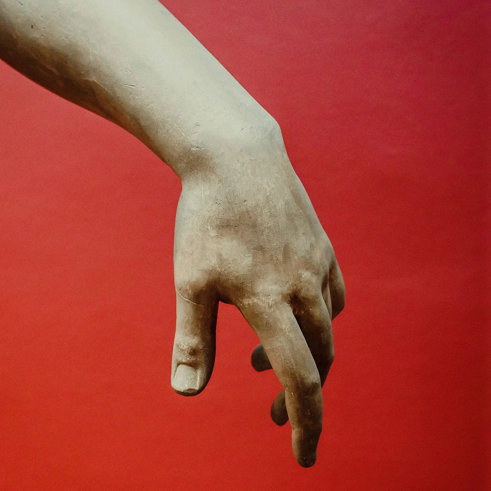

공기는 열기로 일렁였고, 탄 설탕 냄새가 공중에 가득했다. 엄마는 다시 콧노래를 흥얼거렸다. 가슴에서 울려 퍼지는 낮은 곡조는 엄마의 손가락 끝에서 춤추는 작은 푸른 불꽃을 맥박처럼 뛰게 했다. 나는 숨을 죽이고 엄마의 집중을 방해하지 않도록 조심했다. 엄마는 하늘의 균열을 수선하고 있었다.
[The air shimmered with heat, the smell of burnt sugar heavy in the air. Mama was humming again, a low tune that vibrated in her chest and pulsed outwards, making the tiny blue flames on her fingertips dance. I held my breath, careful not to disturb her concentration. She was mending the cracks in the sky.]
몇 주 전부터 시작된 일이었다. 새벽녘 하늘에 거미줄처럼 얇은 금이 가기 시작했다. 처음에는 사람들이 수군거리고 손가락질하며 걱정했다. 그러더니 조각들이 떨어지기 시작했다. 큰 덩어리는 아니었지만, 땅에 닿기도 전에 먼지로 녹아내리는 반짝이는 조각들이었다. 그럼에도 불구하고 모두를 불안하게 만들기에는 충분했다. 엄마가 한숨을 쉬며 낡고 해진 요리책을 꺼낼 만큼 충분했다.
[It had started a few weeks ago, thin hairline fractures spiderwebbing across the dawn. At first, people whispered, pointed, worried. Then, pieces started to fall. Not big chunks, mind you, but shimmering shards that dissolved into dust before they hit the ground. Still, it was enough to make everyone uneasy. Enough to make Mama sigh and pull out her old, worn recipe book.]
엄마는 하늘 수선공이었다. 우리 혈통에 엮인 희귀하고 소중한 마법의 일종이었다. 엄마는 자신의 어머니에게서, 그 어머니는 또 그 어머니에게서 배웠고, 그렇게 별들을 처음으로 꿰매 엮은 최초의 여성까지 거슬러 올라갔다. 엄마는 세상이 한때 어둠의 조각보였다가, 용감한 누군가가 나타나 빛으로 채우기 전까지의 이야기를 나지막하고 편안한 목소리로 들려주곤 했다.
[Mama was a Sky Mender, a rare and precious kind of magic woven into our bloodline. She learned it from her mother, who learned it from hers, all the way back to the first woman who dared to stitch the stars together. She used to tell me stories, her voice low and comforting, about how the world was once a patchwork quilt of darkness until someone brave enough came along and filled it with light.]
이제 빛이 사라지지 않도록 지키는 것은 엄마의 차례였다. 엄마는 더 크게 콧노래를 불렀고, 손가락 끝은 더 밝게 빛났다. 탄 설탕 냄새는 더욱 강해져 캐러멜 오렌지와 따뜻한 계피 향으로 변했다. 엄마가 선셋 글레이즈를 사용하고 있다는 것을 알았다. 심각한 수리를 위해 남겨둔 까다로운 혼합물이었다. 정확한 제어와 흔들리지 않는 집중력이 필요했다.
[Now, it was Mama’s turn to keep the light from fading. She hummed louder, her fingertips glowing brighter. The smell of burnt sugar intensified, turning into the scent of caramelized oranges and warm cinnamon. I knew that meant she was using the Sunset Glaze, a tricky concoction reserved for serious repairs. It required precise control and an unwavering focus.]
엄마의 이마에 땀방울이 흘러내렸다. 닦아주고 싶었고, 물 한 잔을 드리고 싶었지만, 방해해서는 안 된다는 것을 알고 있었다. 방해는 재앙이 될 수 있었다. 내가 아주 어렸을 때, 엄마가 집중력을 잃었을 때 무슨 일이 일어났는지 보았다. 우리 집 위의 하늘 한 조각이 일주일 내내 칙칙하고 생명력 없는 회색으로 변했고, 물 대신 먼지가 비처럼 내렸다. 그 기억에 나는 몸을 떨었다.
[A bead of sweat trickled down Mama’s forehead. I wanted to wipe it away, offer her a glass of water, but I knew better than to interrupt. Distraction could be disastrous. I’d seen what happened when she lost concentration once, when I was just a little girl. A patch of sky above our house had turned a dull, lifeless gray for a whole week, raining dust instead of water. The memory made me shiver.]
엄마의 손가락 끝에 있는 푸른 불꽃은 맥박 치듯 커지면서 하늘에서 가장 큰 균열, 불안한 어둠으로 고동치는 들쭉날쭉한 흉터를 향해 뻗어 나갔다. 나는 숨을 죽였고, 심장은 갈비뼈에 부딪혀 거칠게 뛰었다. 내가 본 것 중 가장 어려운 수리였다.
[The blue flames on Mama’s fingertips pulsed and grew, stretching towards the largest crack in the sky, a jagged scar that pulsed with an unsettling darkness. I held my breath, my heart thumping a wild rhythm against my ribs. This was the most difficult repair I’d ever seen her attempt.]
엄마는 천천히, 힘겹게 불꽃을 엮어 균열 사이로 꿰어 하늘을 다시 꿰매기 시작했다. 공기는 에너지로 탁탁 소리를 냈고, 내 발밑의 땅은 진동했다. 탄 설탕 냄새가 코를 가득 채웠고, 너무 강해서 숨이 막힐 지경이었다.
[Slowly, painstakingly, Mama began to weave the flames, threading them through the cracks, stitching the sky back together. The air crackled with energy, and the ground beneath my feet vibrated. The smell of burnt sugar filled my nose, so strong now it almost made me choke.]
갑자기 불꽃 하나가 깜빡거리며 튀다가 꺼졌다. 엄마는 숨을 헐떡이며 눈을 크게 떴다. 균열은 더 커졌고, 어둠은 더 빠르게 맥박 쳤다. 두려움이 내 가슴을 조여 숨을 쉴 수 없게 만들었다.
[Suddenly, a flame flickered, sputtered, and died. Mama gasped, her eyes widening in alarm. The crack widened, the darkness pulsing faster. Fear tightened its grip around my chest, squeezing the air from my lungs.]
“엄마!” 나는 나 자신도 규칙도 잊고 소리쳤다.
[“Mama!” I cried out, forgetting myself, forgetting the rules.]
엄마는 강렬한 결의에 찬 눈으로 나를 돌아보았다. “걱정하지 마, 미하.” 엄마는 긴장된 목소리로 말했다. “내가 해결할게.”
[She turned to me, her eyes filled with a fierce determination. “Don’t worry, mija,” she said, her voice strained. “I’ve got this.”]
심호흡을 한 엄마는 눈을 감고 다시 콧노래를 부르기 시작했다. 이번에는 새로운 곡조였다. 더 빠르고, 더 거칠고, 전에 들어본 적 없는 날것의 필사적인 에너지가 담겨 있었다. 엄마의 손가락 끝에 있는 푸른 불꽃이 다시 타올랐고, 그 어느 때보다 밝게 타올랐으며, 활기차고 반짝이는 금빛으로 물들었다.
[Taking a deep breath, she closed her eyes, and started to hum again, a new tune this time, faster, wilder, laced with a raw, desperate energy I’d never heard before. The blue flames on her fingertips reignited, burning brighter than ever, tinged with a vibrant, shimmering gold.]
엄마는 천천히, 조심스럽게 다시 엮기 시작했다. 이제 더 빠르고, 더 자신감 있게. 공기는 새로운 에너지로 탁탁 소리를 냈고, 땅은 희망으로 진동했다. 탄 설탕 냄새는 부드러워졌고, 그 자리에 피어나는 재스민의 달콤한 향기가 퍼졌다. 가장 숙련된 하늘 수선공에게만 전해지는 별씨앗 바느질 기법을 사용하고 있다는 신호였다.
[Slowly, cautiously, she began to weave again, faster now, more confidently. The air crackled with renewed energy, the ground vibrated with hope. The scent of burnt sugar softened, replaced by the sweet aroma of blooming jasmine, a sign that she was using the Starseed Stitch, a technique passed down only to the most skilled Sky Menders.]
나는 엄마가 불꽃을 엮어 하늘을 꿰매는 모습을 매혹된 듯 바라보았다. 반짝이는 바늘땀 하나하나가 어둠을 밀어내고 빛을 되찾아왔다. 나의 두려움은 가라앉았고, 그 자리에 자부심이 차올랐다. 엄마는 강했다. 엄마는 마법이었다. 엄마는 우리를 구할 것이다.
[I watched, mesmerized, as Mama wove the flames, patching the sky, stitch by shimmering stitch, pushing back the darkness, bringing back the light. My fear subsided, replaced by a swelling pride. Mama was powerful. Mama was magic. Mama would save us.]
그리고 마지막 금빛 불꽃이 깜빡거리며 사라지고, 온전하고 밝은 하늘만 남았을 때, 나는 엄마가 해냈다는 것을 알았다. 세상은 당분간 안전했다. 빛이 다시 한번 승리했다. 그리고 나, 하늘 수선공의 딸인 나는 언젠가 그 빛을 휘두르는 법을 배우게 될 것이다.
[And as the last thread of golden flame flickered and died, leaving behind a sky whole and bright, I knew she had. The world was safe, for now. The light had won, once again. And I, her daughter, the daughter of a Sky Mender, would learn to wield that light someday too.]
“세상에, 제발 색깔 좀 골라!” 그 목소리가 날카롭게 외쳤다. 브렌다는 깜짝 놀라 매니큐어 병을 거의 떨어뜨릴 뻔했다. 병은 욕실 싱크대 가장자리로 위태롭게 굴러갔다.
[“For the love of all that is holy, would you just pick a darn color!” the voice shrieked. Brenda jumped, nearly dropping the nail polish bottle. It rolled precariously close to the edge of the bathroom sink.]
그것은 미묘하게 시작되었다. 나뭇잎이 바스락거리는 소리처럼 희미한 중얼거림이었는데, 그녀의… 손에서 들려오는 것 같았다. 그녀는 그것을 피로, 스프레드시트에 몸을 웅크리고 늦은 밤을 너무 많이 보낸 결과라고 생각하며 무시했다. 하지만 중얼거림은 점점 커지고 날카로워져서 결국 새끼손가락에서 뚜렷한 목소리가 흘러나왔다. 날카롭고 잔소리하는 목소리.
[It had started subtly. A faint murmur, like the rustling of leaves, only it seemed to be coming from…her hand? She’d dismissed it as fatigue, the consequence of too many late nights spent hunched over spreadsheets. But the murmuring grew, sharpened, until it became a distinct voice emanating from her pinky finger. A shrill, nagging voice.]
“보라색은 너무 유행 지났어, 얘야. 좀 더 대담하고… 활기가 있는 게 필요해!” 새끼손가락이 이상하게 높고 거만한 목소리로 소리쳤다.
[“Mauve is so last season, darling. You need something bolder, something with… pizzazz!” the pinky screeched, its voice oddly high-pitched and imperious.]
그러자 다른 손가락들도 끼어들었다. 엄지손가락은 낮고 굵은 목소리로 분별 있는 베이지색을 투덜거렸다. 검지손가락은 실용적이고 효율적으로 투명 매니큐어를 제안했다. 중지손가락은 예상대로 인터넷의 가장 어두운 구석에서만 찾을 수 있는 색조와 관련된 더 저속한 의견을 가지고 있었다. 그리고 약지손가락, 아, 약지손가락은 잊혀진 꿈의 색처럼 창백하고 순수한 분홍색을 갈망하며 한숨을 쉬었다.
[Then the other fingers chimed in. Her thumb, a deep baritone, grumbled for a sensible beige. Her index finger, practical and efficient, suggested a clear coat. The middle finger, predictably, had a more vulgar opinion involving shades only found in the darkest corners of the internet. And the ring finger, oh the ring finger, sighed wistfully and whispered for a pale, innocent pink, the color of forgotten dreams.]
브렌다는 자신의 손을 쳐다보았다. 손에서 나오는 불협화음을 제외하면 완벽하게 정상적인 손이었다. 그녀는 작은 병사처럼 줄지어 있는 매니큐어에 집중하면서 그 소리를 무시하려고 했다. 하지만 목소리는 점점 더 커지고 집요해졌으며, 우위를 차지하기 위해 다투는 의견의 합창이었다.
[Brenda stared at her hand, a perfectly normal hand, except for the cacophony erupting from it. She tried to ignore them, focusing on the array of polishes lined up like tiny soldiers. But the voices grew louder, more insistent, a chorus of bickering opinions battling for dominance.]
그녀는 그들을 침묵시키려는 필사적인 시도로 밝은 빨간색 병을 집어 들었다. “이거! 이걸로 할게!” 그녀가 떨리는 목소리로 말했다.
[She grabbed a bottle of bright red, a desperate attempt to silence them. “This one! We’ll do this one!” she said, her voice shaky.]
“빨간색? 너 미쳤니? 빨간색은 네 오라랑 안 어울려!” 새끼손가락이 소리쳤다.
[“Red? Are you mad? Red clashes with your aura!” the pinky shrieked.]
“빨간색은 권력의 색이지.” 엄지손가락이 드물게 새끼손가락에 동의하며 우렁차게 말했다.
[“Red is the color of power,” the thumb boomed in agreement, for once, with the pinky.]
중지손가락은 브렌다를 얼굴 붉히게 만드는 욕설을 쏟아냈다.
[The middle finger let out a stream of expletives that made Brenda blush.]
참을 수 없었다. 이건 정상이 아니었다. 손은 말하지 않는다. 손가락은 매니큐어에 대한 의견을 갖지 않는다. 그녀는 수도꼭지 아래에서 손을 문질렀고, 차가운 물은 잠시 안도감을 주었다. 아마도 그것은 모두 그녀의 머릿속에 있는 것일 것이다. 스트레스, 그게 다였다. 그녀는 그저 휴식을 취해야 했다.
[It was unbearable. This wasn’t normal. Hands didn’t talk. Fingers didn’t have opinions on nail polish. She scrubbed her hands under the faucet, the cold water a momentary relief. Maybe it was all in her head. Stress, that was it. She just needed to relax.]
하지만 그녀가 수건에 손을 뻗는 순간, 약지손가락이 다시 속삭였다. 그 목소리는 슬픔에 잠긴 한숨 같았다. “그가 분홍색을 좋아했을 텐데…”
[But the moment she reached for the towel, the ring finger whispered again, its voice a mournful sigh, “He would have liked the pink…”]
브렌다는 얼어붙었다. 그? 그는 누구였지? 그녀는 … 마이클 이후로 분홍색을 바른 적이 없었다. 그는 분홍색을 좋아했고, 항상 그녀의 실용적이고 분별 있는 색상 선택에 대해 놀렸었다.
[Brenda froze. He? Who was he? She hadn’t worn pink since… since Michael. He had loved pink, always teasing her about her practical, sensible colors.]
“…그러니까 내 말은, 요즘 생선 가격이 너무 터무니없다는 거야!” 바위가 투덜거렸고, 그 목소리는 낮은 울림으로 바위가 놓여 있는 먼지 쌓인 선반을 진동시켰다. 할아버지의 어수선한 작업장에 있는 의자에 앉아 있던 엘리자는 거의 움찔하지 않았다. 그녀는 한 시간 가까이 바위의 불평을 듣고 있었다.
[…So, as I was saying, the price of fish these days is just outrageous!“ The rock grumbled, its voice a low rumble that vibrated the dusty shelf it sat on. Eliza, perched on a stool in her grandfather’s cluttered workshop, hardly flinched. She’d been listening to the rock’s complaints for the better part of an hour.]
"수입산 때문이라니까.” 바위가 말을 이었고, 운모 조각이 빛을 받아 반짝였다. “예전에는 자갈 한 줌이면 괜찮은 대구를 살 수 있었는데, 지금은… 지금은 광택이 나는 보석을 원한다고! 말도 안 돼.”
[“It’s the imported stuff, you see,” the rock continued, a fleck of mica catching the light. “Used to be you could get a decent haddock for a handful of pebbles, but now… now they want polished gemstones! Ridiculous, I say.”]
엘리자는 한숨을 쉬었다. 에드거 할아버지는 말하는 바위에 대해 경고했었다. 그는 작업장이 그런 바위들로 가득 차 있다고 했고, 각각의 바위는 그의 기억의 조각을 가지고 있으며, 각각의 바위는 할아버지 자신처럼 완고하고 고집이 세다고 했다. 그는 또한 엘리자에게 굴뚝새 모양의 바위, 그의 유명한 블루베리 파이 레시피의 비밀을 담고 있는 바위를 찾으라고 말했다.
[Eliza sighed. Grandpa Edgar had warned her about the talkative rocks. He’d said the workshop was full of them, each one holding a piece of his memory, each one as stubborn and opinionated as the old man himself. He’d also told her to find the rock shaped like a wren, the one that held the secret to his famous blueberry pie recipe.]
하지만 선반 위에 쌓여 있고, 구석에 끼어 있고, 서랍 속에 자리 잡은 바위들은 수십 개였고, 모두 모양과 크기가 제각각이었다. 엘리자는 몇 시간 동안 바위들을 뒤지고 있었고, 손가락은 아프고 먼지투성이가 되었다. 그녀는 장미 덤불을 가지치기하는 적절한 방법에 대한 강의, 좋은 품질의 파이프 담배의 쇠퇴에 대한 한탄, 그리고 현재의 정치 상황에 대한 놀랍도록 통찰력 있는 분석을 모두 다양한 심술궂은 바위들로부터 들었다.
[But there were dozens of rocks, all shapes and sizes, piled on shelves, tucked into corners, nestled in drawers. Eliza had been sifting through them for hours, her fingers growing sore and dusty. She’d heard a lecture on the proper way to prune a rose bush, a lament about the decline of good quality pipe tobacco, and a surprisingly insightful analysis of the current political climate, all from various grumpy rocks.]
“너희 젊은 것들은 몰라.” 선반 위의 바위가 말을 이었고, 그 목소리는 약간 갈라졌다. “내 시대에는…”
[“You youngsters have no idea,” the rock on the shelf continued, its voice cracking slightly. “Back in my day…”]
엘리자는 그것을 무시하고 다음 선반을 훑어보았다. 매끄럽고 회색인 것은 대략 감자 모양이었고, 뾰족한 붉은색은 작은 화산처럼 보였고… 저건 굴뚝새인가? 녹슨 못이 든 먼지 쌓인 병 뒤에 숨겨진 작고 회색빛의 바위가 섬세한 부리와 접힌 날개를 가지고 그녀의 눈길을 사로잡았다.
[Eliza tuned it out, her eyes scanning the next shelf. There was a smooth, grey one shaped vaguely like a potato, a jagged red one that looked like a miniature volcano, and… was that a wren? Tucked behind a dusty jar of rusty nails, a small, grey rock with a delicate beak and folded wings caught her eye.]
그녀의 심장이 뛰었다. 이게 그 바위일까? 그녀는 조심스럽게 그것을 집어 들고 손바닥에 쥐었다. 촉감이 차갑고 놀라울 정도로 가벼웠다. 그녀는 숨을 죽이고 기다렸다.
[Her heart skipped a beat. Could this be it? Gingerly, she picked it up and held it in her palm. It was cool to the touch and surprisingly light. She waited, holding her breath.]
침묵.
[Silence.]
다른 바위들도 조용해졌고, 엘리자만큼이나 흥미로워하는 것 같았다. 몇 분이 흘렀다. 유일한 소리는 구석에 있는 할아버지 시계의 규칙적인 똑딱거리는 소리였다. 실망감이 그녀를 괴롭혔다. 어쩌면 그냥 평범한 바위일지도 몰랐다.
[The other rocks had fallen quiet, seemingly as intrigued as Eliza. Minutes ticked by. The only sound was the rhythmic ticking of the grandfather clock in the corner. Disappointment pricked at her. Maybe it was just a regular rock, after all.]
그녀가 그것을 다시 놓으려는 순간, 바위에서 작고 짹짹거리는 소리가 났다. 그것은 희미하고 거의 들리지 않았지만, 분명히 그곳에 있었다. 엘리자는 그것을 귀에 더 가까이 가져갔다.
[Just as she was about to put it back, a tiny, chirping sound emerged from the rock. It was faint, almost inaudible, but definitely there. Eliza held it closer to her ear.]
“두 컵의…” 굴뚝새 바위가 짹짹거렸고, 그 목소리는 나뭇잎이 부스럭거리는 소리 같았다. “…그리고 한 꼬집의…”
[“Two cups of…” the wren-rock chirped, its voice like the rustling of leaves, “…and a pinch of…”]